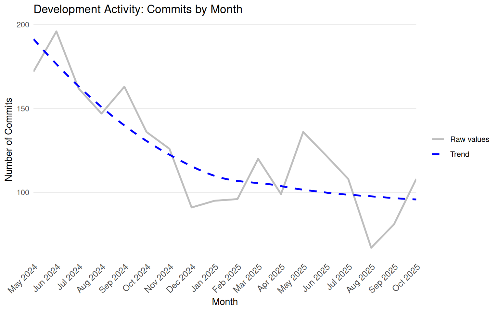

Open Issues (and change since 1 month ago)
4242 (+57)
Open PRs (and change since 1 month ago)
347 (-2)
Issues
93
Pull Requests
68
Stack Overflow Questions
3
Mailing List messages
34
Open Issues
56
Issues from New Contributors
32
Issues with No Replies
27
Open PRs
14
PRs from New Contributors
4
Unreviewed PRs
0
Questions in last 90 days
3
Questions without accepted answer
3
Questions with no activity
0
Issues
41
Pull Requests
38
Stack Overflow Questions
0
Mailing List messages
0
Open Issues
17
Issues from New Contributors
8
Issues with No Replies
6
Open PRs
3
PRs from New Contributors
0
Unreviewed PRs
1
Questions in last 90 days
0
Questions without accepted answer
0
Questions with no activity
0
Open Issues (and change since 1 month ago)
Open PRs (and change since 1 month ago)